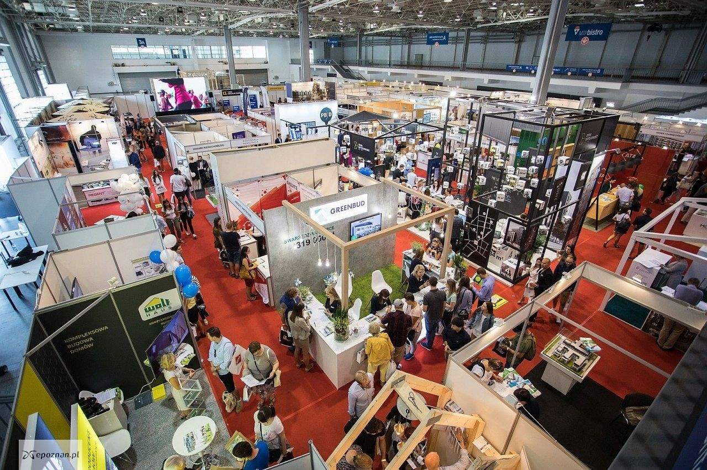
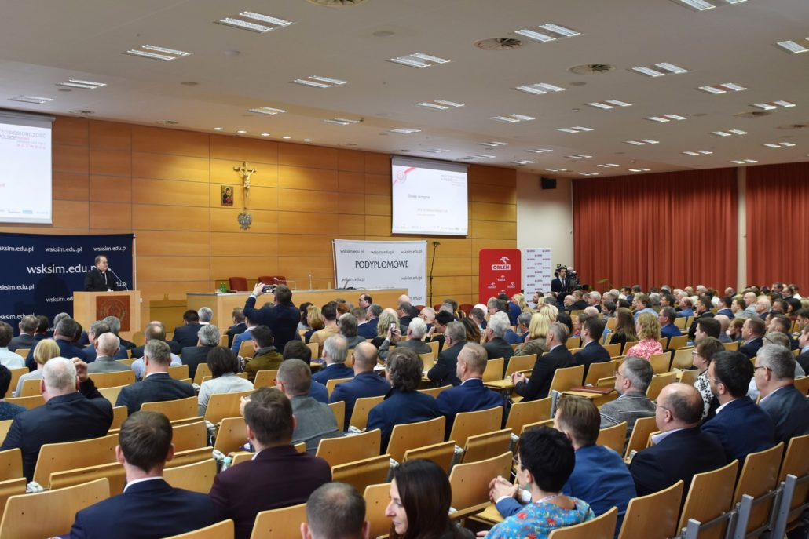

Organizacja imprez plenerowych publicznych i pikników firmowych
Podczas organizacji imprezy plenerowej podstawowym zadaniem jest oszacowanie liczby uczestników takiego wydarzenia. W zależności, czy jest to impreza masowa, czy nie, możemy sobie pozwolić na oszacowanie potencjalnych atrakcji, dostosowanie cateringu czy zaplanowanie zaplecza technicznego. W przypadku imprezy masowej, zajmujemy się kompleksową dokumentacją, którą należy złożyć w odpowiednich urzędach. Podczas takich imprez jak pikniki czy festyny, nie możemy zapomnieć o odpowiednim zadbaniu o służby ratownicze i ubezpieczenie, które jest kompleksowo gwarantowane przez agencję Whatevent.

Organizacja targów i wystaw
Targi organizujemy dla wszystkich branż i w wielu krajach świata: Europa, Azja, Afryka.
Zawsze rekomendujemy najlepsze, największe imprezy targowe o zasięgu światowym. Zaufały nam miedzy innym takie firmy jak SECPOL Sp. z o.o. czy Staropolanka – Grupa KGHM.
Ponadto:
– pomożemy załatwić wszelkie formalności niezbędne do uzyskania wizy. Podpowiemy jakie są niezbędne dokumenty do uzyskania wizy do konkretnego kraju a następnie zajmiemy się ich uzyskaniem. Przygotujemy vouchery biznesowe, turystyczne i inne potwierdzenia do wizy. Kompleksowo zorganizujemy również wyjazdy służbowe, w tym bilety lotnicze, rezerwacje hotelowe itd.

Organizacja konferencji oraz narad
Konferencja czy kongres to prestiżowe wydarzenie wymagające umiejętności doskonałego zgrania wielu czynników, planowania, realizowania i koordynowania działań. Na początku jest wizja przedsięwzięcia. Droga do jej realizacji - długa, kręta i pełna przeszkód i niespodzianek. Tych ostatnich nie da się uniknąć - można jednak być na nie przygotowanym.
Dobra organizacja to umiejętność połączenia wielu elementów w harmonijną całość. To trudna praca zespołowa, która wymaga twórczej inwencji i wyobraźni nie mniej, niż drobiazgowego planowania i zdolności przewidywania, czy systematyczności i cierpliwości.